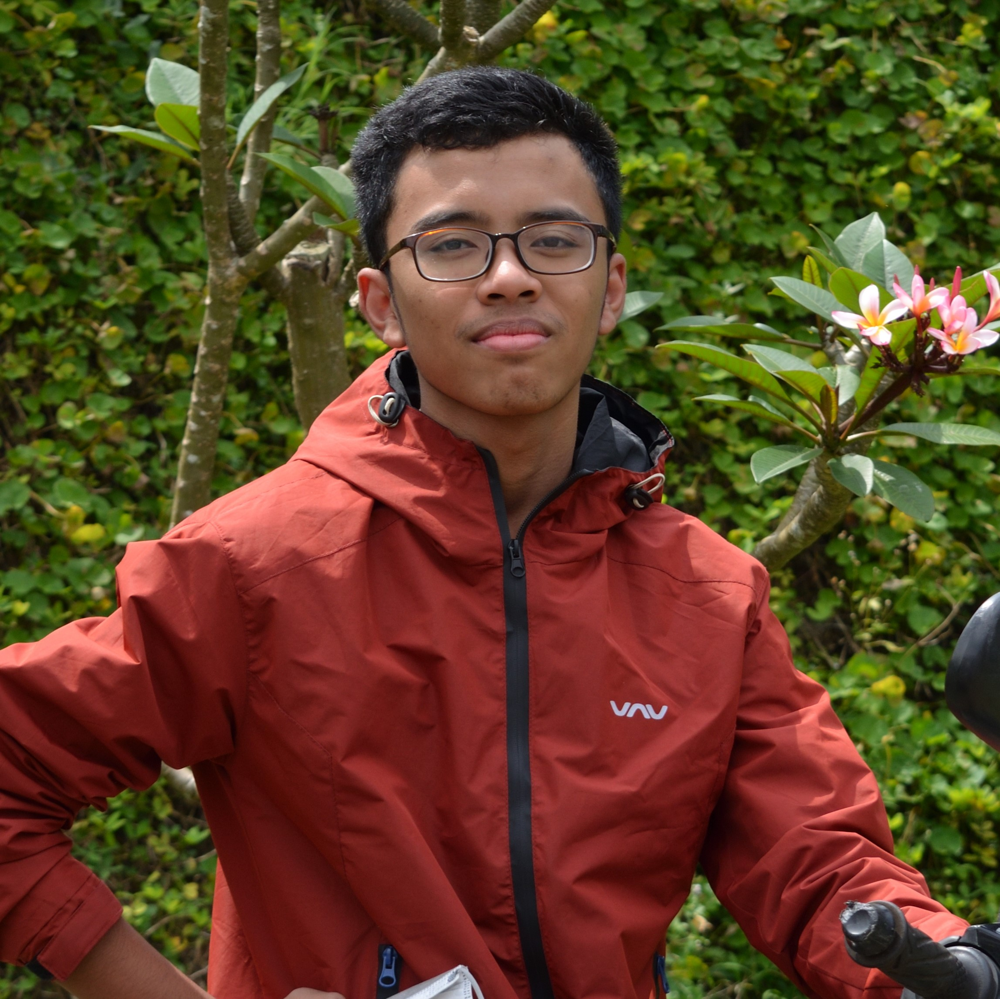

ABOUT ME
Mahasiswa S1 IPB, Jurusan Ilmu Komputer yang memiliki keterkaitan dibidang website development. Memiliki pengalaman membuat berbagai project website sederhana. Saya memiliki kemampuan ketelitian yang sangat baik. Ketelitian saya telah membantu mengidentifikasi dan mengatasi berbagai masalah potensial.
Kemampuan
Bahasa Pemprograman
ABOUT ME
Mahasiswa S1 IPB, Jurusan Ilmu Komputer yang memiliki keterkaitan dibidang website development. Memiliki pengalaman membuat berbagai project website sederhana. Saya memiliki kemampuan ketelitian yang sangat baik. Ketelitian saya telah membantu mengidentifikasi dan mengatasi berbagai masalah potensial.